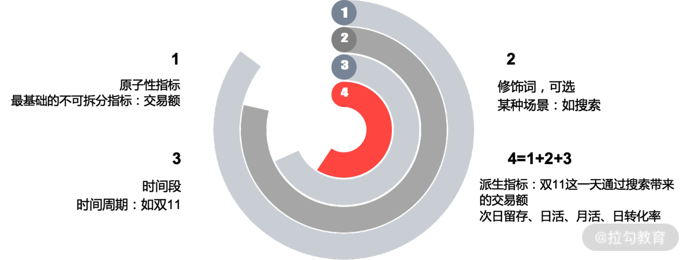

以下内容整理自拉勾教育《数据分析思维与实战 23 讲—— 10 | 指标体系搭建：指标体系的经典四步》
微观模块的学习包含指标体系、流量分析、路径分析、竞品分析、营销活动分析、用户增长分析等，而在所有模块当中，最基本的是指标体系。
指标体系的定义及选取原则
实际工作过程会出现令人不悦的两种情况。第一种是对于某核心数据，如日活，只知道数据在变化，但是不知道为何变化，特别是处于一个较大跌幅时，产品为了解释这种现象，就会向数据分析师要各种维度的数据。比如，年底汇报时，产品跟数据要各种各样的数据，要了之后发现跟现有数据对不上，数据内部要花费大量时间对各种各样的口径。第二种情况是每隔一段时间，产品都会拉上数据、研发一起对埋点，总是觉得当前的字段不够用，底层日志越来越大，数仓修改的也越来越多，取数越来越慢，错误越来越多。
这两种情况的根本原因都在于缺少指标体系的建设、宣贯（宣传）以及实施。其中宣贯和实施更为关键，因为有一些公司有指标体系的建设，但宣贯不到位，所以实施的时候就更不到位。比如，开会时决定要做哪些指标体系，大家都拍手叫好，但在落地时，很多动作没有做到位，这些都屡见不鲜。
业务方不重视指标体系是感觉指标体系是基建活，离完成 KPI 太远，只有出问题时才会临时重视。数据方不重视指标体系是因为这是一个吃力不讨好的工作，做好了可以，做不好就背锅。甚至有些分析师认为，指标体系只是一个思维导图而已。
要想把指标体系真正说明白并不容易，但如果你都说不明白，你怎么判断你自己真的很懂呢？作为埋点、取数、分析的一切前提，指标体系如果做不好，始终会很乱。
指标体系到底是什么？指标体系是在业务的不同阶段，分析师牵头与业务方协助，制定的一套能从各维度去反映业务状况的待实施框架。
这里面有几个关键点：
在业务的前期、中期、后期，指标体系不一样；
一定是由分析师牵头与业务方协助，而不是闭门造车；
从各维度去反映业务的核心状况，指标有很多维度；
最后就是一个大实施框架，一定要实施，否则就是浪费大家时间。
而在指标选取时要注重几个原则：根本性、可理解性、结构性。
根本性：对于核心数据一定要理解到位和准确，如果这里错了，后面基本不用看。
可理解性：所有指标要配上业务解释性，如日活的定义是什么，是产品的打开还是内容的点击还是后台进程在就行。
结构性：能够充分对业务进行解读，如新增用户只是一个大数，我们还需要知道每个渠道的新增用户、每个渠道的新增转化率、每个渠道的新增用户价值等。
建立指标体系的四个步骤
第二个模块是指标体系建立，知道了指标选取原则后，具体如何建立指标体系？可以分为四个步骤。在讲解指标体系建立的过程之前，我们先看一下所有指标的构成，如下图所示。

我们工作过程中遇到的指标都是派生性指标
1 | 派生性指标=原子性指标+修饰词+时间段 |
修饰词本身是可选项，而原子性指标和时间段是必选项。原子性指标是最基础的，不可拆分的指标，比如交易额、支付金额，下单数。而修饰词往往是基于某种场景，注意它是一个可选的指标，比如是通过搜索带来的交易。时间段是一个必选的指标，
比如，时间周期。我们选的是双 11 这一天，通过 1 加 2 加 3 就衍生出一个派生性指标——双 11 这一天通过搜索带来的交易额。如果不需要修饰词，那就是双 11 这一天的交易额。同样像次日留存、日活、月活、日转化率都是派生指标，这就是所有指标的构成。实际上它是由原子性指标加修饰词加时间段组成，这些知识在大家做数据仓库时，非常有用。
具体的指标体系建立分为四个步骤。
第一步：厘清业务阶段和方向
你要知道当前业务处于什么阶段，具体的业务方向是什么。对于一家公司往往会有三个阶段。
第一阶段：业务前期（创业期），在业务前期更多是想快速抢占市场份额，看公司盘子大小。所以在业务前期最关注用户量，此时的指标体系应该紧密围绕用户量提升做各种维度的拆解，比如说渠道。
第二阶段：业务中期（快速发展期），在业务中期，除了关注盘子的大小，还要看产品的健康度，除了关注前面的用户量走势，更重要的是优化当前的用户量结构。如果留存偏低，必然跟产品模块有关系，是不是某功能流量承接效果太差。
第三阶段：业务后期（成熟发展期），在成熟期看变现能力以及市场份额，整个行业市场格局已定，一定要看收入指标，各种商业化模式的收入，同时做好市场份额和竞品监控，防止后来者居上。
第二步：确定核心指标
第二步最重要的是找到正确的核心指标，这可不是一件容易的事，不是因为这件事很难，而是所有人重新接受一些客观事实很难。
举个例子，某款产品的日活口径是打开 App，通过不断买量、外部刷量，日活也一直在上升。业务方觉得挺好，但分析师发现，打开 App 的用户中，3 秒跳出率达 30%，这非常不健康。这说明当前的核心指标（日活）有问题，更好的核心指标是停留时长大于 3 秒的用户数。
每个 App 的核心指标都不太一样，所以一定要多花时间去考虑这件事，这个非常重要，不只是看日活和留存。核心指标确定好之后，更重要的是对核心指标进行维度拆解。
第三步：指标核心维度拆解
核心指标的波动必然是由某种维度的波动引起，所以要监控核心指标，本质上还是要监控维度核心指标。通用的拆解方法是先对核心指标进行公式计算，再按照业务路径或者业务模块进行拆解。
比如，当前的核心指标是停留时长大于 3 秒的用户数。那么停留时长大于 3 秒的用户数等于打开进入 App 的用户数乘以停留时长大于 3 秒的占比。
停留时长大于 3 秒的用户数 = 打开进入 App 的用户数 * 停留时长大于 3 秒的占比
对于打开进入 App 的用户数，如果我们要想在这一块有所提升，就要看各个渠道的转化率是多少？用户从哪里来？用户通过什么方式打开 App？是通过点击桌面图标还是点击通知栏？同时这些用户的画像是什么？
对于停留时长大于 3 秒的一个占比，要看具体停留时长的分布到底是什么样子，有多少是 3 秒，同时要了解停留大于 3 秒的用户特征以及行为特征是什么情况，有没有作弊或者说刷量的可能性。
核心维度的拆解，需要多跟业务方进行沟通，把能够考虑到的模块都给放进去，基本上就比较全面。
第四步：指标宣贯、存档、落地
最后就是指标的宣贯、存档以及落地。
宣贯：很多人都忽略了这一步，往往是和业务核心人员沟通好之后就直接开始建报表。实际上搭建好指标体系后，要当面触达到所有相关的业务接口人，最好是开会并邮件。
存档：同时要对指标的口径和业务逻辑进行详细的描述存档，如某功能日渗透率=该功能的日点击人数/日活。只有到这一层，后面的人才能一眼看懂口径的意思。
落地：落地就是建核心指标的相关报表，实际工作中，报表都会在埋点前建好，这样一旦版本上线就立刻能看到数据，同时这时各方的配合度都很高。
这就是指标体系建立的四个步骤，其中每一步都非常关键。很多数据分析师经常抱怨临时提数需求太多，本质是因为指标体系没做好，指标体系很分散。
知乎 App 指标体系实操
我们最后以知乎 App 为例，按上述步骤看一下它的指标体系。
第一步：厘清当前业务发展的阶段
知乎当前是处于业务发展期和成熟期之间，有两个论点。
当前知乎的业务在一个快速调整期，内容向娱乐大众化转型。
商业化进行较大的探索，比如，有一个“大学”模块，模块里面包含一些付费课程，但在这一块做的不是很重。
知乎的主界面，如下图所示。
图里面没有广告，如果该业务是在一个比较成熟的阶段，这里面会掺杂很多广告。实际工作过程中你判断业务发展处在什么阶段，只要看明年的业务规划，就能够得到答案。
第二步+第三步：确定核心指标以及拆解核心指标
确定好业务发展阶段之后，就要确定核心指标以及对核心指标进行拆解，这里我放在了一起。对于知乎 App 来说，它有非常多的功能，如下图所示。
比如图中较上位置的“关注”“推荐”“热榜”“视频”导航栏，下面还有“首页”“想法”“大学”“通知”“我的”等模块，每一个模块都由不同的产品经理去做。而不同的产品经理，他们所面临的核心指标不一样。
我以首页推荐模块为例，对于首页推荐模块最重要的指标就是问答数。
1 | 问答数=提问数+回答数=提问人数 * 人均提问数+回答人数 * 人均回答数 |
提问人数这里是否有必要按照漏斗模型来拆？我的理解是不用。
有些同学可能觉得评论、点赞、收藏数应该是核心指标，实际上评论点赞多跟产品的健康度没有直接关系，评论点赞多的本质原因是因为提问回答比较精彩，这是一个相关性关系而不是因果性关系。很多做内容的同学，都觉得评论很重要，只要我评论做上去了，日活就能涨上去，数据相关性上是这样，但业务逻辑性不对。所以评论、点赞、收藏是二级功能，更底层的理解实际上是增加 App 的社交属性。
第四步：指标宣贯、存档、落地
核心指标以及指标维度拆解确定好之后，下面就是第四步——宣贯、存档、落地建表。
宣贯：拉上产品和研发开会议过流程，产品（负责使用）、研发（负责打点）。
存档：对不太好理解的指标要进行单独的解释，比如什么是日活，具体操作是怎样。
落地：确定好打点之后，就要建表，确保数据第一时间出来，能及时发现问题。
实际工作过程中根本不需要一套大而全的指标体系，我们只需要围绕当前的核心指标解决最重要的问题即可。可能你看到有一些分析师把某产品模块的指标体系画得非常复杂，可能包含七八个模块。但我可能会问一句，你最后到底看哪个指标，你这些难道都要打点吗？其实对一个产品来说七八个模块都很重要，基本是不可能的，唯一解释就是产品想做的东西太烦琐。
总结
指标体系本质上是代表业务人员和分析师的逻辑性怎么样，这个非常重要。不同业务阶段指标体系不一样，核心指标一定要正确。核心指标的拆解通用模式都是先公式拆解，再按照业务模块、路径来分。指标体系的宣贯和存档工作必不可少。